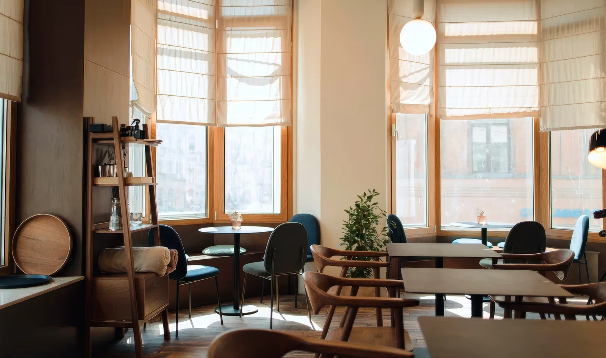
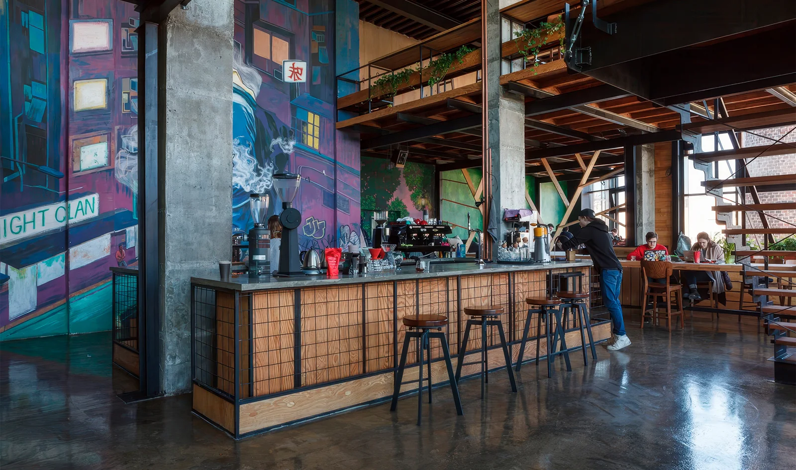
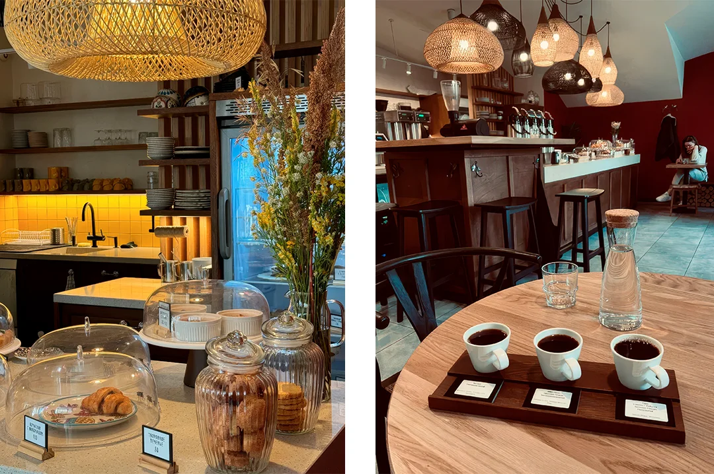
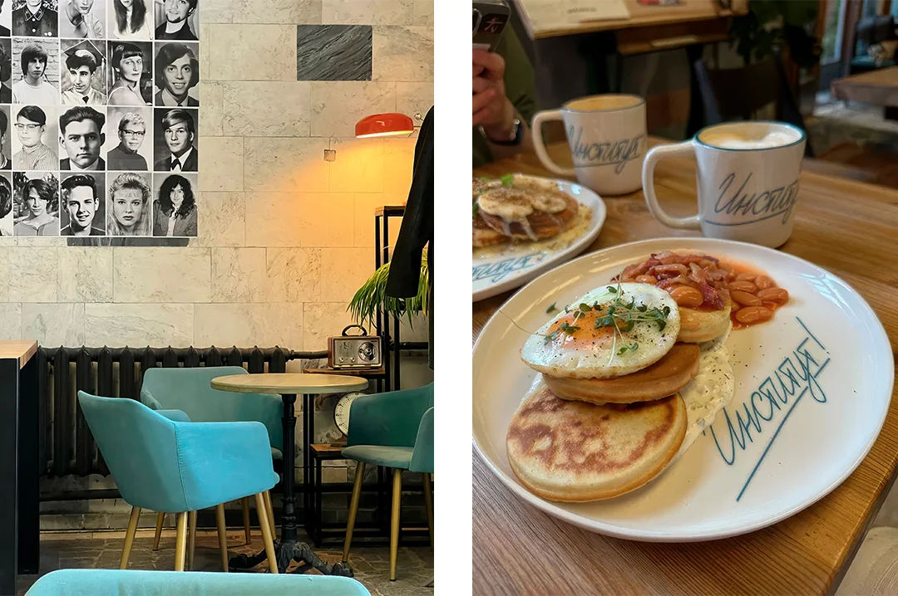
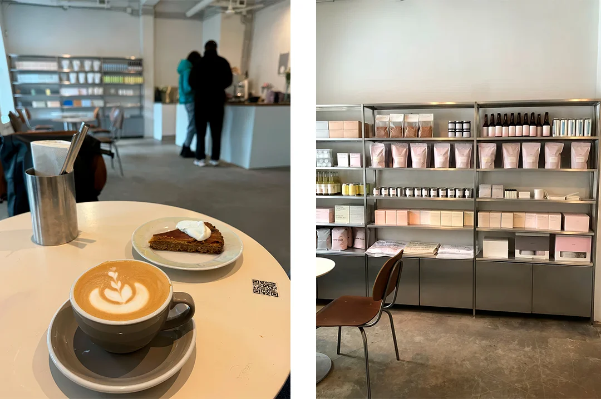

Лучшие кофейни Петербурга: 7 заведений, куда ходят местные за спешелти-кофе
Автор: Никита Назаров
Подборка городских кофеен для тех, кому важны кофе, атмосфера и локальные места. Может стать основой для прогулки с несколькими остановками на напиток и отдых.
Читать полную статью на блоге Островка →



Фото: Юлия Новикова / Яндекс.КартыИсточник изображения


Фото: Coffee 3Источник изображения


Фото: Ольга Евтеева & Александр Е. / Яндекс.КартыИсточник изображения


Фото: Anna Potemkina & Анастасия Севостьянова / Яндекс.КартыИсточник изображения


Фото: Evgeny Belyaev & Виктория Н. / Яндекс.КартыИсточник изображения